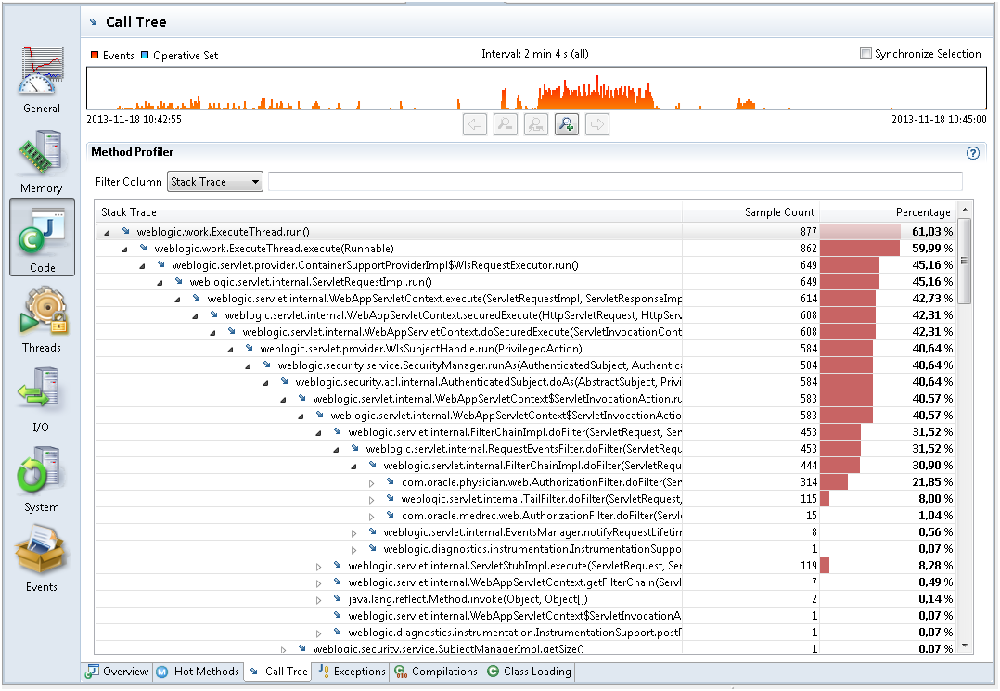

When there are not a lot of Java Application events, it could be that the main bottleneck of your application is the running code. First, look at the Threads tab and select the Overview tab. See CPU Usage Over Time. This shows the CPU usage of the JVM being recorded and the total CPU usage on the machine. In case the JVM CPU usage is low, but the CPU usage of the machine is high, which means some other application is taking a lot of CPU. Then, look at the other applications running on the system in the Processes tab from the System tab group. However, you may not see their CPU usage, so it is usually easier to use OS tools such as Top or the task manager to find out which processes are using a lot of CPU.
Select the Code tab group and look at the Hot Threads tab in case your application is using a lot of CPU time. This tab shows the threads that use the most CPU time. However, this information is based on Method Sampling, so it may not be 100% accurate if the sample count is low. When a JFR is running, the JVM samples the threads. By default, a continuous recording does only some Method Sampling, while a profiling recording does as much as possible. The Method Sampling gathers data from only those threads actually running code. The threads waiting for I/O, sleeping, waiting for locks etc are not sampled. Therefore, threads with a lot of method samples are the ones using the most CPU time; however, how much CPU is used by each thread is not known.
The Hot Methods tab in the Code tab group helps find out where your application spends most of the execution time. This tab shows all the samples grouped by top method in the stack. Use the Call Tree tab to start with the lowest method in the stack traces and then move upward. Figure 4-6 starts with Thread.run, then looks at the calls that have been most sampled.
Figure 4-6 Code Execution Performance - Call Tree Tab
